Seaborn使用(1)：Controlling figure aesthetics
风格设置
Drawing attractive figures is important. When making figures for yourself, as you explore a dataset, it’s nice to have plots that are pleasant to look at. Visualizations are also central to communicating quantitative insights to an audience, and in that setting it’s even more necessary to have figures that catch the attention and draw a viewer in.
Matplotlib is highly customizable, but it can be hard to know what settings to tweak to achieve an attractive plot. Seaborn comes with a number of customized themes and a high-level interface for controlling the look of matplotlib figures.
Controlling figure aesthetics:
- Seaborn figure styles
- Removing axes spines
- Temporarily setting figure style
- Overriding elements of the seaborn styles
- Scaling plot elements
Seaborn figure styles
#%matplotlib inline
import numpy as np
import matplotlib as mpl
import matplotlib.pyplot as plt
import seaborn as sns
np.random.seed(sum(map(ord, "aesthetics")))
def sinplot(flip=1):
x = np.linspace(0, 14, 100)
for i in range(1, 7):
plt.plot(x, np.sin(x + i * .5) * (7 - i) * flip)
sinplot()
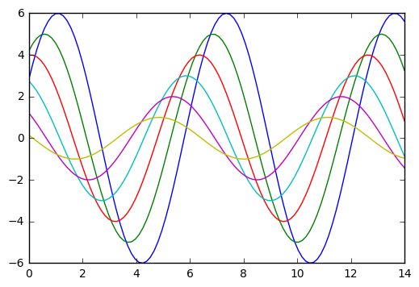
To switch to seaborn defaults, simply call the set() function.
sns.set()
sinplot()
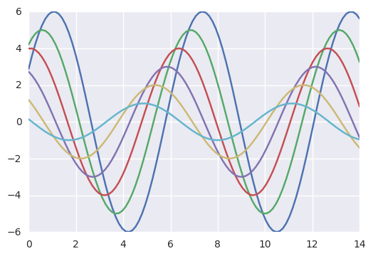
5种主题风格
- darkgrid
- whitegrid
- dark
- white
- ticks
sns.set_style('whitegrid')
data = np.random.normal(size=(20, 6)) + np.arange(6) / 2
# print(help(np.random.normal))
# print(data)
sns.boxplot(data=data)
<matplotlib.axes._subplots.AxesSubplot at 0xaf23470>
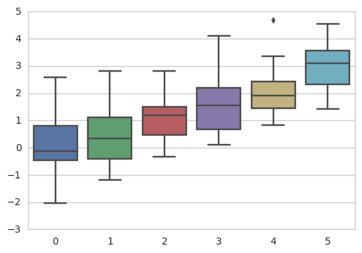
For many plots, (especially for settings like talks, where you primarily want to use figures to provide impressions of patterns in the data), the grid is less necessary.
sns.set_style('dark')
sinplot()
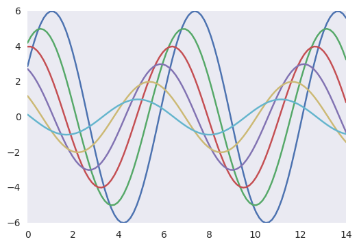
sns.set_style('white')
sinplot()
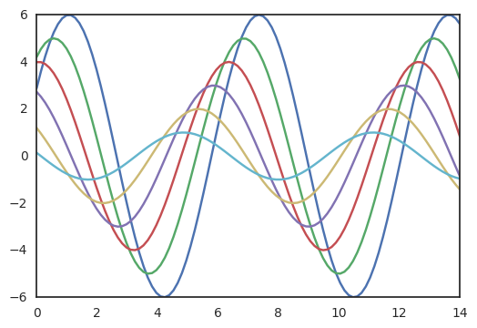
Sometimes you might want to give a little extra structure to the plots, which is where ticks come in handy:
sns.set_style('ticks')
sinplot()
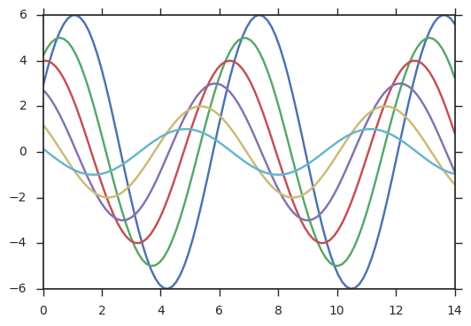
Removing axes spines
sinplot()
sns.despine()
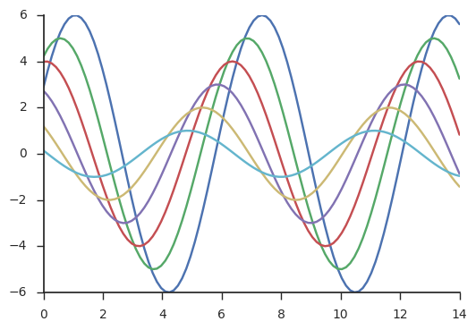
violinplot
Some plots benefit from offsetting the spines away from the data, which can also be done when calling despine(). When the ticks don’t cover the whole range of the axis, the trim parameter will limit the range of the surviving spines.
f, ax = plt.subplots()
ax.set_title('Violinplot')
sns.violinplot(data=data)
sns.despine(offset=10, trim=True)
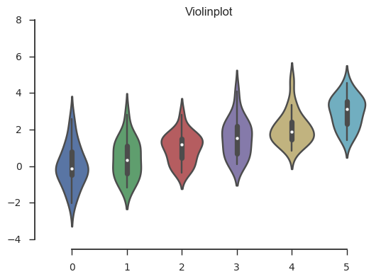
You can also control which spines are removed with additional arguments to despine()
sns.set_style("whitegrid")
sns.boxplot(data=data, palette="deep")
sns.despine(left=True)

Temporarily setting figure style
Although it’s easy to switch back and forth, you can also use the axes_style() function in a with statement to temporarily set plot parameters. This also allows you to make figures with differently-styled axes:
with sns.axes_style("darkgrid"):
plt.subplot(211)
sinplot()
plt.subplot(212)
sinplot(-1)
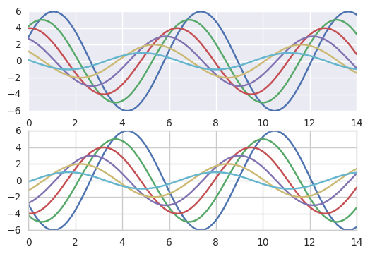
Overriding elements of the seaborn styles
sns.axes_style()
{'axes.axisbelow': True,
'axes.edgecolor': '.8',
'axes.facecolor': 'white',
'axes.grid': True,
'axes.labelcolor': '.15',
'axes.linewidth': 1.0,
'figure.facecolor': 'white',
'font.family': ['sans-serif'],
'font.sans-serif': ['Arial',
'DejaVu Sans',
'Liberation Sans',
'Bitstream Vera Sans',
'sans-serif'],
'grid.color': '.8',
'grid.linestyle': '-',
'image.cmap': 'rocket',
'legend.frameon': False,
'legend.numpoints': 1,
'legend.scatterpoints': 1,
'lines.solid_capstyle': 'round',
'text.color': '.15',
'xtick.color': '.15',
'xtick.direction': 'out',
'xtick.major.size': 0.0,
'xtick.minor.size': 0.0,
'ytick.color': '.15',
'ytick.direction': 'out',
'ytick.major.size': 0.0,
'ytick.minor.size': 0.0}
You can then set different versions of these parameters:
sns.set_style("darkgrid", {"axes.facecolor": ".9"})
sinplot()
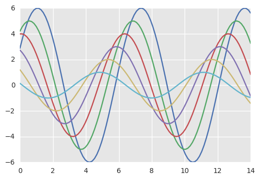
Scaling plot elements
sns.set()
sns.set_context('paper')
sinplot()
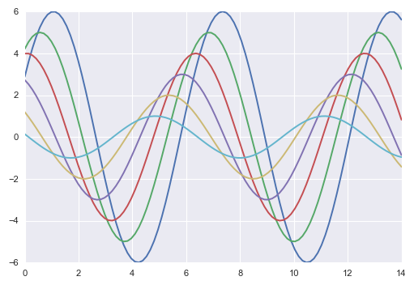
sns.set_context('talk')
sinplot()
sns.set_context('poster')
sinplot()
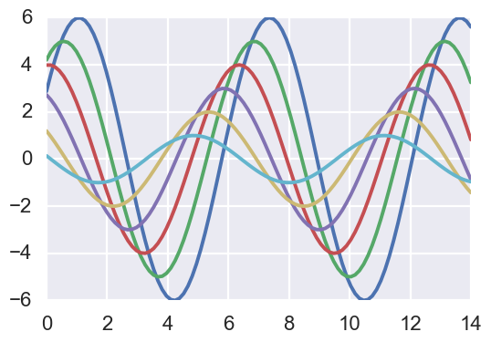
sns.set_context('notebook', font_scale=1.5 ,rc={"lines.linewidth": 2.5})
sinplot()
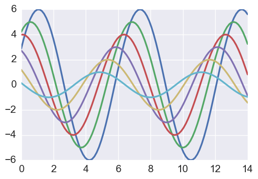